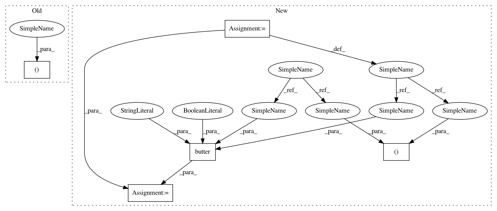

4afdc53218ffc1356c008ef2e4a3c4c5d4f1795e,scipy/signal/tests/test_filter_design.py,TestButtord,test_bandpass,#TestButtord#,171
Before Change
assert_allclose(Wn, 2.994397774822765e-01, rtol=1e-15)
def test_bandpass(self):
n, Wn = buttord([0.2, 0.5], [0.1, 0.6], 3, 80)
assert_equal(n, 18)
assert_allclose(Wn, [1.988019498910527e-01, 5.020435331649425e-01],
rtol=1e-15)
After Change
ws = [0.1, 0.6]
rp = 3
rs = 80
N, Wn = buttord(wp, ws, rp, rs, False)
b, a = butter(N, Wn, "bandpass", False)
w, h = freqz(b, a)
w /= np.pi
assert_array_less(-rp - 0.1,
dB(h[np.logical_and(wp[0] <= w, w <= wp[1])]))
In pattern: SUPERPATTERN
Frequency: 4
Non-data size: 5
Instances
Project Name: scipy/scipy
Commit Name: 4afdc53218ffc1356c008ef2e4a3c4c5d4f1795e
Time: 2014-01-28
Author: endolith@gmail.com
File Name: scipy/signal/tests/test_filter_design.py
Class Name: TestButtord
Method Name: test_bandpass
Project Name: scipy/scipy
Commit Name: 4afdc53218ffc1356c008ef2e4a3c4c5d4f1795e
Time: 2014-01-28
Author: endolith@gmail.com
File Name: scipy/signal/tests/test_filter_design.py
Class Name: TestButtord
Method Name: test_highpass
Project Name: scipy/scipy
Commit Name: 4afdc53218ffc1356c008ef2e4a3c4c5d4f1795e
Time: 2014-01-28
Author: endolith@gmail.com
File Name: scipy/signal/tests/test_filter_design.py
Class Name: TestButtord
Method Name: test_lowpass
Project Name: scipy/scipy
Commit Name: 4afdc53218ffc1356c008ef2e4a3c4c5d4f1795e
Time: 2014-01-28
Author: endolith@gmail.com
File Name: scipy/signal/tests/test_filter_design.py
Class Name: TestButtord
Method Name: test_bandstop